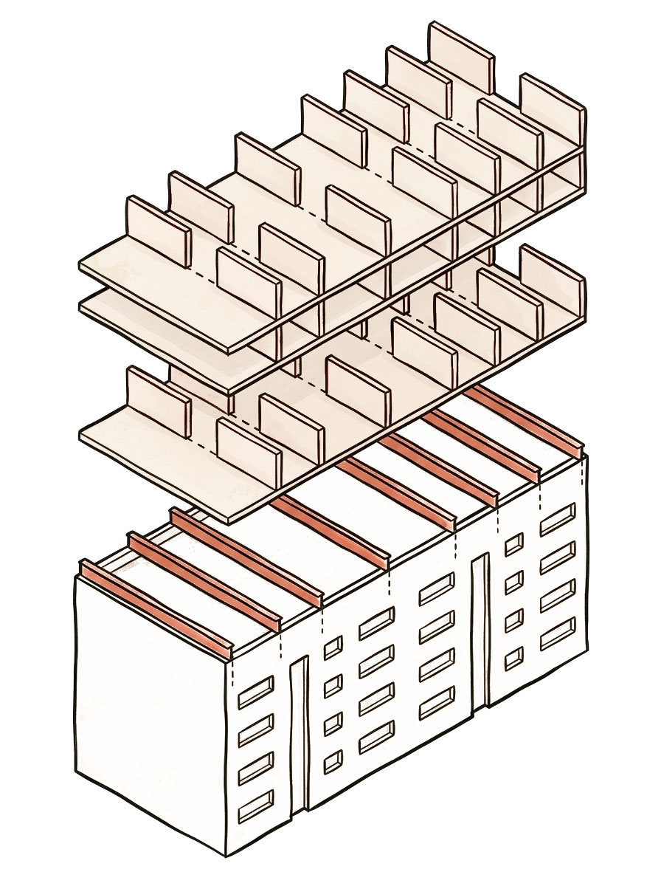
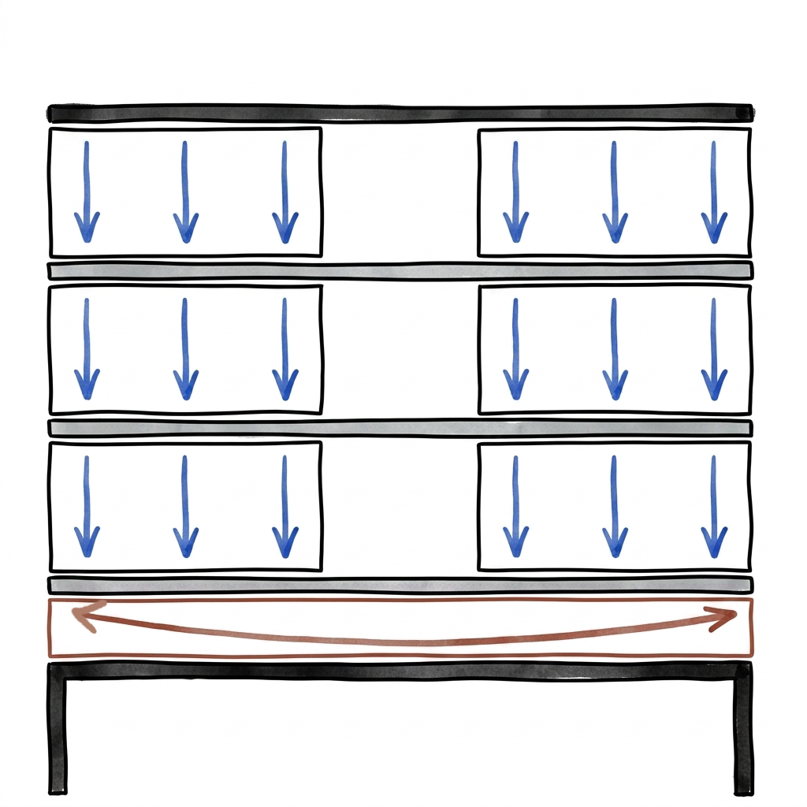
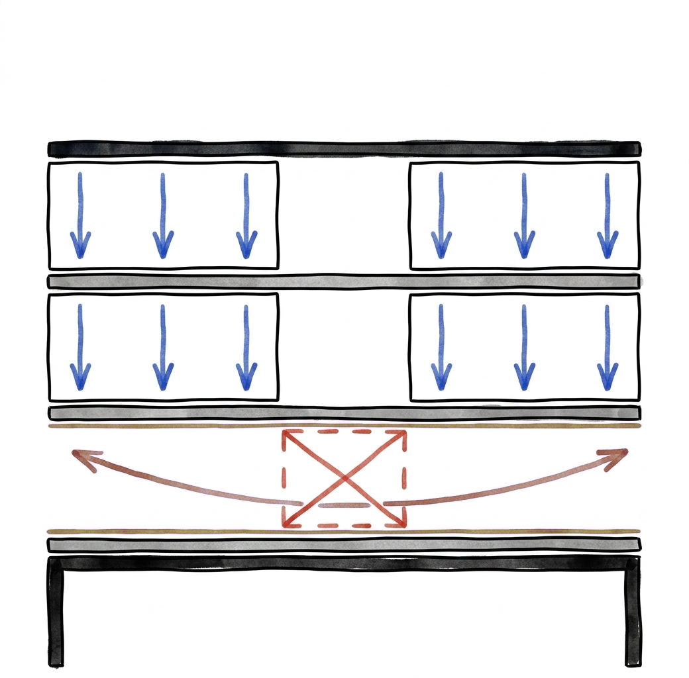
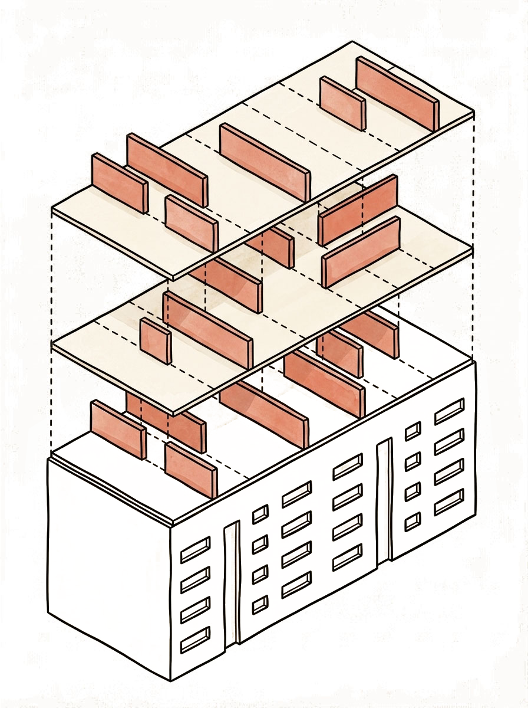
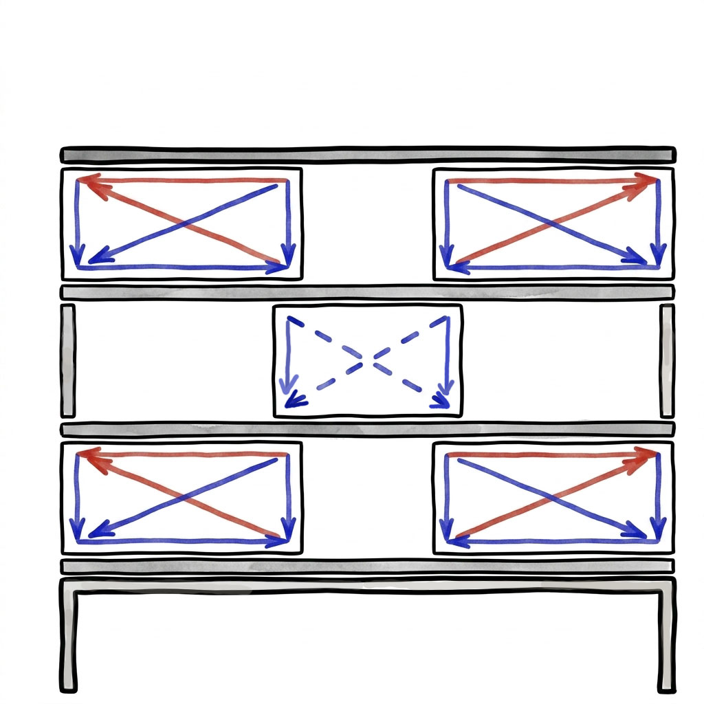
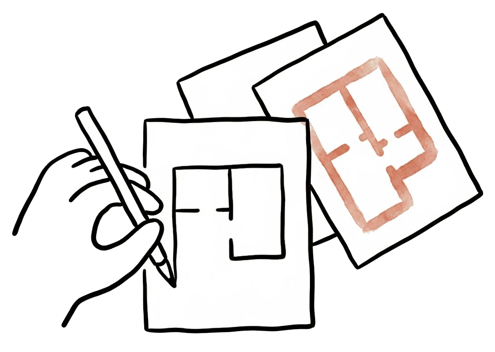
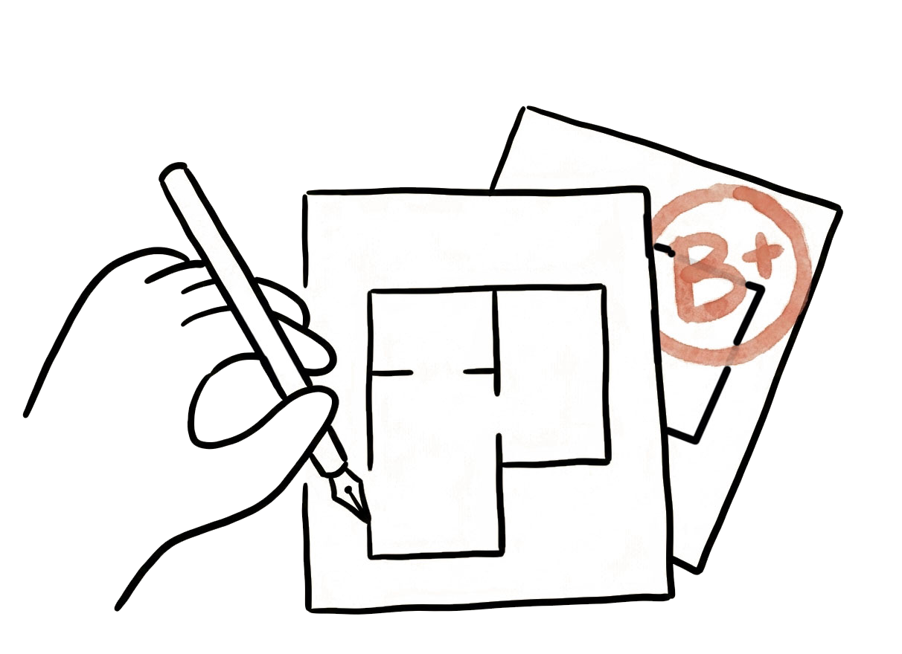

Optimized Layout Solutions for Sustainable Timber Spatial Structures for Residential Densification
Gefördert vom Bundesinstitut für Bau-, Stadt- und Raumforschung (BBSR) im Auftrag des BMWSB aus Mitteln der Forschungsinitiative Zukunft Bau.
Team.
Chair
Research associate
Architecture & Urbanism
Chair
Research associates
Today.
Problem.
Promise, friction, and why we can't just keep stacking.
The land we keep losing.
+31 % in 35 years.
2000–2020.
70 football pitches.
Vertical densification [Aufstockung] is major sustainable lever. Timber makes it lighter. Modular construction makes it affordable.
Stack a structure, stack a slab,
stack the same flat.


A distribution layer transfers loads down to the existing support points.
Vertical alignment forces every new floor to repeat the existing apartment mix.
The distribution layer adds height and conflicts with the building-regulation envelope.
Let the walls do the work.


Walls as wall-beams — distribution layer omitted. Large openings inside a load-bearing wall become hard.


Coordinate walls vertically — openings and load paths planned together. Layout and structure are now coupled.
We can build it.
We can't design it.
Timber Raumtragwerke, wall-beam load-paths, coordinated wall stacks, modular components. We know how to build this.
Coordinating apartment layout with structural performance, across every storey, every building. Manual design can't keep up.

A design-support system is required.
The SpatialTimber Aufstockung Assistent
Approach.
Neufert 4.0.
A Zukunft Bau–funded research project that produced two open outputs: a custom floor-plan dataset of Swiss apartments, and a diffusion-based generation model trained on it via imitation learning.
Need whole buildings instead of single apartments. Need a modular structure instead of freely positioned walls.
Architectural quality and structural performance instead of mere visual plausibility.
Imitation alone breaks down.

Not enough data.
Imitation needs lots of examples. Floor-scale, building-scale, timber-aware plans are not on the internet. → Adding more data isn't an option.
Too much to learn at once.
Teaching one model shape + scale + structure + quality + programme end-to-end is too tangled to converge. → Training on the full task fails.
Break the problem into pieces. Combine.
A large frozen foundation model — plus small adapters that turn it into an architect.
A pre-trained foundation (FLUX.1-schnell pipeline, >20 B parameters) that already carries general visual and spatial intelligence. Frozen — we never retrain it.
Small adapters clipped onto the frozen base — LoRA, r=32 — 116 M parameters, well under 1 % of the base. Each adapter teaches one thing: generate an apartment, generate a floor, always place a bathroom and a kitchen.
Base = general intelligence. Adapters = the specialization. Stack the right adapters and a generic image model becomes an architect for modular timber extensions of residential buildings.
Train where there's data.
Transfer to where there isn't.
Apartment plans are everywhere; whole buildings far scarcer. 47,156 apartments vs. 3,183 buildings (13,806 floors in between) — more than an order of magnitude across the scales we care about.
Each adapter starts where the previous one left off. Floor inherits Apartment's weights; Building inherits Apartment + Floor. Only the scale-specific knowledge is learned at each step.
The building adapter has effectively seen ~64,000 examples, not 3,183 — by composing what the smaller adapters already know.
No answers to imitate?
Learn through feedback.
The Swiss dataset teaches the model what a floor plan looks like, not what we consider a good one.
1 No off-the-shelf evaluator exists — we develop one in this project. 2 Exists only as FE analysis (minutes per query); we train a surrogate to make it loop-fast.
Millions of iterations means each eval must score in milliseconds. FE structural analysis takes minutes. We train a surrogate DNN that approximates the simulation and use it as the in-loop scorer.

Outcome.
Five adapters, trained one at a time.
We train one adapter at a time and let each boot the next. The apartment adapter seeds the floor adapter, which seeds the building adapter.
Reward-based fine-tuning raised the apartment generator's usable-layout rate from 51 % → 80 %.
The same reward loop on the building generator with RL training to improve its structural efficiency.
Early prototype, lessons learned.
1 A perfectly reliable generative model isn't feasible.
2 Errors multiply — combined accuracy compounds as 0.8n.
a Stronger base models + more training.
b Generate many options, then filter for the good ones.
With stochastic systems, the ability to evaluate results is what makes them usable.
Does each room fit the furniture it needs?
HoWoGe's Wohnungsbewertungssystem prescribes which furniture each room must accept. A designer checks it room by room, by hand.
We turned that check into an algorithm.
For each required piece: can it fit in the room, respecting walls, doors, and clearances?
Per piece: 0 (no fit) · 0.75 (one valid placement) · 1.0 (≥ 2 placements) — weighted by piece importance, rolled up to a 0–100 room score.
Reference: HoWoGe Wohnungsbewertungssystem · Planungskatalog V 2.0 (2016)
An algorithm that furnishes rooms
and evaluates them.
A U-Net that fakes the FEM in milliseconds.
17 binary channels. Building geometry on a 32 × 96 grid (0.625 m timber module). Up to 50 × 16 m × 5 storeys. Slab + X/Y-walls + support points.
U-Net · ≈ 8 M params. ResNet-style encoder, CBAM attention in bridge + decoder. Trained on FEM-scored layouts. Channel-weighted loss (utilization × 10).
22 channels. Utilization — 16 ch (each wall × storey). Displacement — 6 ch (slab-level).
Beyond FEM, three things you couldn't do before.
Every wall gets its own answer.
Standard FE-surrogates collapse a layout to one score. We output 22 distinct channels — 16 for utilisation (per wall element × per storey) plus 6 for displacement. This granularity makes targeted decisions possible.
Tells you which wall matters.
End-to-end differentiable. A gradient ∂U/∂w is available for every wall — so the designer (or an optimiser) can ask "which wall costs me least if I remove it?", not just "is this layout OK?"
Robust to any layout your generator produces.
Standard FE-surrogates are trained for one dedicated typology. We trained on thousands of random architectural layouts. This drops in as the structural scorer for anything the DNN generates: no re-training per typology.
Same surrogate, different job. Tells you which walls you don't need.
Each wall is ranked by its contribution gradient.The same surrogate that scores layouts also exposes ∂U/∂w per wall — a direct measure of how much load-bearing capacity that wall actually carries.
Walls below threshold get demoted to partition.Pruning runs as a sweep: lowest-contribution wall first, re-score, repeat. Stops when every remaining wall is above the structural threshold.
Rooms untouched, only the wall status changes.Floor plan, daylight, circulation all stay put. The pruning is invisible to the resident; visible only in the timber bill of materials.
Demonstration
& Outlook.
Gotteszeller Straße,
Berg am Laim, München
- Operator: Münchner Wohnen
- Typology: Slab blocks from 1954
- Footprint: 50.0 × 9.4 m
- Apartment mix: 2–4 room apartments
- Vertical extension: 2 storeys
- Apartment mix per EOF Wohnungsaufteilungsschlüssel
Two Papers,
Three Open-Source Releases.
Adapter marketplace.
Pick your skills, get your model.
For different local contexts — regulations, construction systems, typologies.
User picks skills, platform composes a tailored generative model. No retraining from scratch.
What needs to be solved first.
The problem. Adapters don't stack neatly. Adding layout efficiency can push barrier-free compliance out of balance.
Research outlook. Detect which adapters pull against each other, and keep them in balance, e.g. training conflicting ones jointly instead of one at a time.
The problem. Every adapter is bound to single base model. A new base means costly retraining of all adapters.
Research outlook. Model-independent adapters, or ways to carry adapters to a new base without retraining.
Funded by the Bundesministerium für Wohnen, Stadtentwicklung und Bauwesen, vertreten durch das Bundesinstitut für Bau-, Stadt- und Raumforschung, im Rahmen der Forschungsinitiative Zukunft Bau.
Chair of Structural Design · TU Dresden
patrick.schaeferling@tu-dresden.de